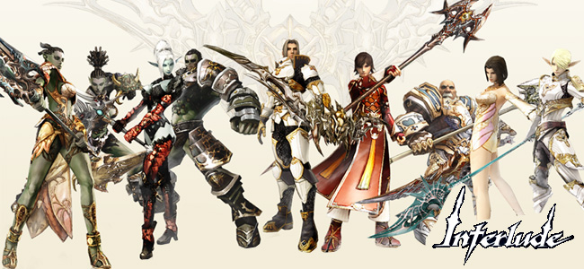

A la hora de comenzar tu aventura es importante saber que equipo debes utilizar. El poder elegir un buen equipo te ayudara poder ganar mas batallas y ayudar de mejor forma a tus amigos.
Los equipos se clasifican en grados y estos dependen del nivel del personaje.
Level 1 a 20 = Sin grado
Por ahora seguro que no estas familiarizado con el termino "NO-Grade", pero cuando comienzas a jugar seguro que lo harás porque ese es el rango al que perteneces desde nivel 0 a Nivel 20; significa que aun no tienes un grado de mucha importancia ya que no has cambiado a ninguna profecion especifica de acuerdo a tu raza, por lo tanto las armaduras, armas, joyas y consumibles que ocupes deberan ser por fuerza de nivel "No Grado" de lo contrario tendras una penalidad que te afectara en la rapidez con que corres y atacas, la fuerza del ataque y la facilidad con que obiamente te mataran.
Por otra parte, en esta etapa algun clan te puede admitir en su academia y cuando realices tu cambio de clase seras graduado automaticamente de esta recibiendo un accesorio como premio. A primera instancia ubieses pensado que te botaron del clan, pero ahora que sabes esto te daras cuenta que solo te has vuelto un poco mas fuerte como para permanecer en la academia... ¡es hora de que le digas al lider del clan que te admita en alguna guardia real!
Level 20 a 40= Grado D
El grado D (nivel 20 a 40) es uno de los grados donde tomaras mas gusto por el juego, en donde por una parte ya aprendiste las tecnicas basicas y por otro has echo tu primer cambio de profesión, descubriendo mas skills (tecnicas) nuevas y aplicandolas en el arte de la guerra. El cambio de profesión es simplemente saber a que te vas a dedicar en un futuro, puedes ser experto en el uso de arco, espada y escudo, daga o cuchillo, baculo (magos), armas a dos manos como espadas duales, mazos, etc. Para mas información sobre cambios de clase sugiero des click aquí.
Entonces, al igual que en No-Grado, aqui tendras (si quieres, porque ya puedes) que cambiar tus armaduras, joyas, armas y consumibles por las que digan "Grado D" pero ahora con la diferencia de comprar cosas acordes con tu profesión. Por ejemplo, si soy un arquero mi armadura debe ser ligera y mi arma un arco claro está, si soy arquero y uso ropa pesada y una espada y un escudo, mi jugador sera blanco fácil de otros jugadores o de animales salvajes, ya que su anatomía y las tecnicas que se le han enseñado no son para nada acordes con estas vestimentas.
La compra del equipo de este grado se hacen en las tiendas de cada ciudad. Revisa tu mapa para ubicarte bien, cabe mencionar que a veces entre ciudades cambia el precio de cada pieza y la variedad de las mismas.
Level 40 a 52= Grado C
Hora del segundo cambio de clase(nivel 40 a nivel 52), ya haz acompletado tu entrenamiento en la primer profesión y ahora que ya tienes los requerimientos necesarios, con este seguiente cambio te perfilas aun mas hacia la especialidad en la aplicacion de alguna arma especifica. Aqui aprenderas muchas skills nuevos y costará un poco mas ganar experiencia si eres un jugador solitario. Es bueno poder tener un grupo de amigos o bien unirse a un clan en vez de enfrentar las dificultades solo.
Igual como ya sabes tienes que cambiar equipo si es que quieres probar las nuevas armas. Las armas grado C se venden en ciudades como GIRAN y ADEN, o bien en nuestro "GM Shop" ubicado en las ciudades principales.
Level 52 a 61= Grado B
Este grado es considerado como "La etapa del PVP" (player vs player). Bueno pues ahora que el juego se mas competitivo, tendras que defenderte sólo, lo que crea constantes peleas ya sea de territorio, o de puro gusto por ver en el pizo a otros.
Seguro te darás cuenta que las armas,joyas y armaduras grado B no se venden en las tiendas de las ciudades, pero como se mencionó anteriormente, existe un "GM-Shop" que esta en las ciudades mas importantes y zonas de leveo que vende todo tipo de cosas que no encontraras en ningun otro lugar. Los precios son un poco mas elevados de lo que estas acostumbrado y algunos objetos se compran con una moneda especial, pero a estas alturas del juego ya se debe conocer el negocio y comercio. Por otra aprte, al momento de comprar se debe diferenciar cual arma es mejor , cual set de armadura te proteje mas, etc. así que sabras que lo que estas pagando no es para nada excesivo.
En esta etapa no hay cambio de clases pero si hay mucho que hacer, te recomiendo que te unas a un clan y vayan de war (guerra) maten a clanes enemigos y preparense para conquistar castillos fortalezas y sobretodo a juntar dinero para que empiezas a comprarte accesorios de lujo, todo para ser el mejor jugador.
Level 61 a 76= Grado A
Del nievel 61 al nivel 76, para este entonces ya seras bastante fuerte como para empezar a hacer la Quest de nobleza o juntar dinero para comprarla y saltarte la Quest. Aprovecha el paso por estos niveles para empezar a hacerte un personaje noble, ser mejor que los demas y empezar a participar en olimpiadas para ser héroe.
Al nivel 75 ya puedes sacar la "subclase" que consiste en agregar una profesión mas a tu personaje, haciendo que tenga mas roles dentro del juego.
Level 76 a 80= Grado S
El top de los grados (nivel 76 a nivel 85), no hay mas, esto es lo máximo que puedes aspirar en cuanto a grados pero no en cuanto a poder. En el nivel 76 se realiza el ultimo cambio de clase, como quien dice aqui adquieres todos los derechos para poder aprender mas skills. En aprender todas skills depende de ti, y que las sepas usar mejor que los demas, tambien depende de ti; ahora bien, en grado S existen muchos sets de armas y armaduras.
Los equipo de "grado S" puedes utilizarlos desde nivel 76. Las armas y armaduras en este grado son bastante buenas con habilidades unicas cada una de ellas, estan al alcance de todos los jugadores pero a su vez costaran más.
Atte. Administrador:
 Siuk
Siuk